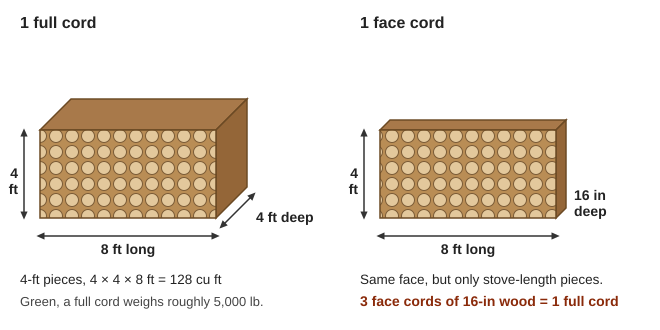
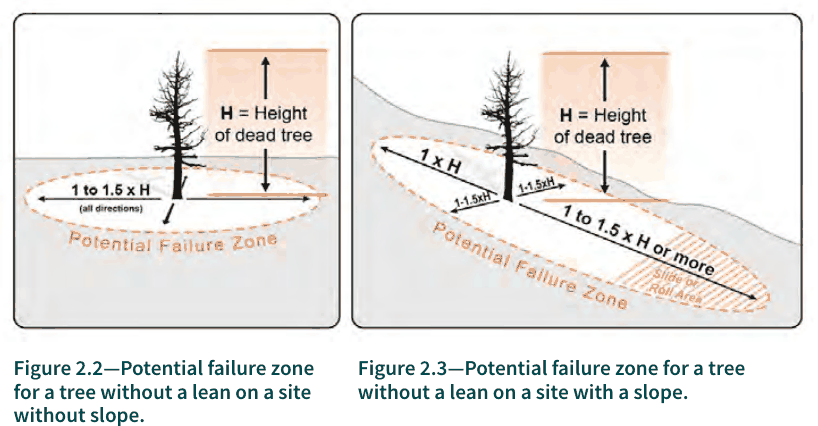
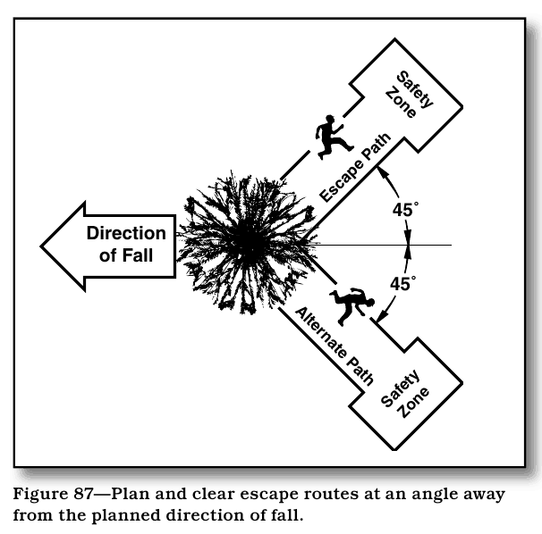
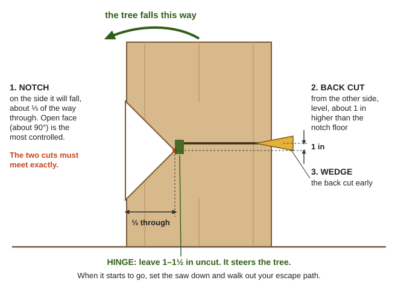
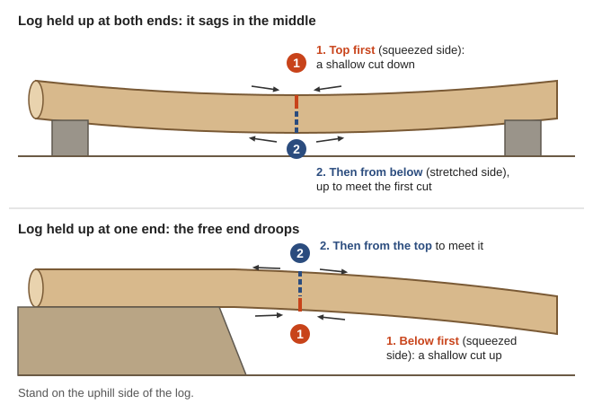
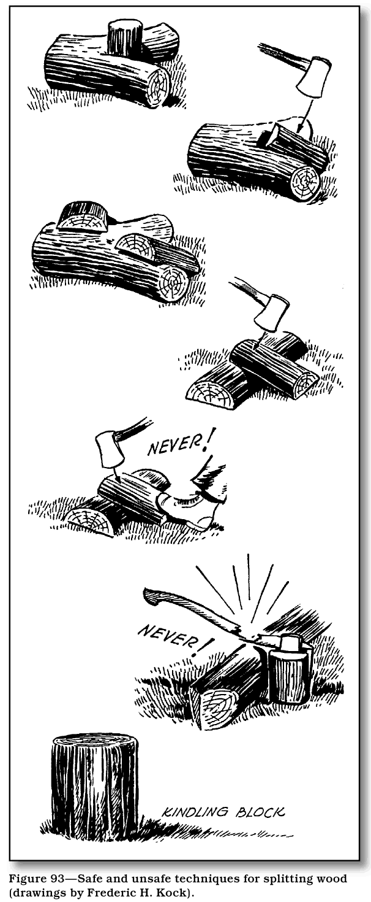
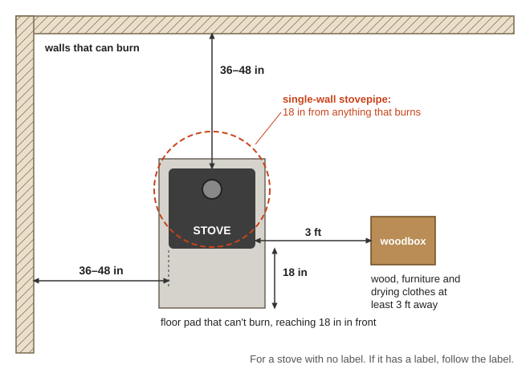

How to keep a household warm and cooking with wood: which local trees give the most heat, how much you'll need, felling and bucking safely, splitting, drying wood in our wet winters, burning it cleanly, keeping the chimney from catching fire, handling ashes in fire country, and growing your own firewood from oak, madrone and tanoak stumps. The manuals are in Firewood\ (Cutting-Felling, Splitting-Seasoning, Burning-Stoves-Chimneys, Woodlot); saws, axes and sharpening are in Engines-Motors\Chainsaws-and-Saws and the Blacksmithing guide.
⚠️ Rules that prevent the worst injuries and fires
Felling kills more woodcutters than anything else. Leave snags and dead trees to someone experienced, never cut alone, and keep everyone two tree-lengths away (WorkSafeBC Part 1, p. 13).
Plan your escape before you cut, about 45° back and away from where the tree will fall (drawing).
Never use an axe as a wedge or to drive one; wear eye protection when striking steel wedges (U. of Minnesota, p. 12).
Ashes start wildfires. Lidded metal can, on bare ground, well away from the house, for days.
Carbon monoxide and chimney fires — a CO alarm near the bedrooms, and a clean chimney.
Which wood, and how much
All dry wood gives about the same heat per pound (~9,000 BTU) — so heavier (denser) wood gives more heat per cord (PNW-GTR-810, p. 9).
Use the right wood for the job: cedar and pine for kindling and quick spring or fall fires; oak, madrone and tanoak for cold nights and overnight burns (rule of thumb). Creosote comes mostly from wet wood and smoldering fires, more than from the kind of tree (E-1388, p. 2).
How much:
A cord is a stack 4 ft × 4 ft × 8 ft (128 cubic ft) (drawing). A face cord is 4 ft high by 8 ft long with shorter pieces — three face cords of 16-inch wood make one full cord (CMHC, pp. 62, 64). A cord of green wood weighs roughly 5,000 lb (Cornell).
A whole house heated only by wood: 2–4 cords a winter; a stove that helps out: 1–2 cords (CMHC, p. 64). Add a cord or two if you also cook with wood, and keep a year ahead so next winter's wood is drying now (rule of thumb).
Trees per cord (trunk width at chest height): 10-inch ≈ 0.15 cord; 14-inch ≈ ⅓ cord; 22-inch ≈ 1 cord (Cornell, p. 1).

A full cord and a face cord: three face cords of 16-in wood make one cord (a diagram drawn for this guide).
Size it up. Don't fell in gusty wind, fog, snow or ice. Check the lean from two sides (a weight on a string works), look up for dead limbs ("widow-makers") and vines tying it to other trees, and bore in once to check for rot (drawing). Alder and maple often have rotten hearts (EC 1124, pp. 3–4).
Dead trees and snags are a different job. They can fail across a circle 1–1½ times their height, farther downhill (USFS FS-1273, p. 36). Tanoak killed by Sudden Oak Death rots fast and can snap before it's fully dead — treat it as very high risk, and don't move infected tanoak wood to new areas (FS-1273, p. 181).
Clear an escape path about 45° back and away from the fall direction, and clear brush around the trunk (EC 1124, p. 5).
Notch (undercut) on the side it will fall, about one-third of the way through the trunk. The two cuts must meet exactly — if they don't, the trunk can split up and kick back ("barber chair"). An open-face notch (about 90°) is the most controlled (EC 1124, pp. 6–7; the three notches).
Back cut from the other side, level and about 1 inch higher than the floor of the notch. Stop to leave a hinge of uncut wood 1–1½ in thick — the hinge steers the tree. Wedge the back cut early. When it goes, set the saw down and walk out your escape path (EC 1124, pp. 7–8; back cut and hinge).
Hung up in another tree? Don't cut the tree it's leaning on and don't work under it — see the professional fallers' methods for hang-ups and leaners (WorkSafeBC Part 2).

A dead tree can land anywhere within 1 to 1½ times its height, and farther downhill (FS-1273, p. 36).

Clear two escape paths at 45° back and away from the line of fall (An Ax to Grind, p. 47).

The notch, back cut, hinge and wedge in steps 4 and 5 (a diagram drawn for this guide).
Stand uphill of the log. Cut the side that's being squeezed (compression) first with a shallow cut, then finish from the side that's being stretched (tension) — this keeps the saw from pinching (EC 1124, pp. 8–9; uphill stance).
Log supported at both ends (it sags in the middle): cut down from the top first, then up from below. Supported at one end: cut up from below first (U. of Minnesota, p. 11).
Bent-over saplings ("springpoles") whip when cut. Stand to the side and shave the inside of the bend with shallow cuts (EC 1124, p. 10).
Cut length to fit your stove — usually 16 in, a little shorter than the firebox.
Fire season: saws start fires. Cut early in the morning, keep the spark arrester in place, carry a shovel and extinguisher, and stay a while after you stop (rule of thumb).

Cut the squeezed side first so the saw isn't pinched (a diagram drawn for this guide).
Tools: a 6–8 lb splitting maul handles nearly everything; two steel wedges and a sledge for tough rounds. Keep wedge heads ground smooth — mushroomed steel throws chips.
Set up: a big round as a chopping block, at a height where the maul handle is level when it hits. An old tire bolted on top holds pieces upright.
Technique: swing with your legs and body, all the way through — half swings stick the maul. Aim for existing cracks, put knots at the bottom, and work slabs off the edges of big rounds before trying the middle (safe and unsafe splitting).
Size: split everything to 6 inches or less so it dries — rounds of 6–10 in at least in half, 10–14 in at least in quarters.
Safety: goggles, boots and shin protection; bystanders 20 ft away.
Easiest when: green wood splits easier than dry for most species; frozen wood splits easier still (rule of thumb).

Safe and unsafe ways to split: never with your foot in the swing, and never strike steel with an axe (An Ax to Grind, p. 51).
Wet wood wastes heat — a ton of wood at 60% moisture gives about 5.6 million BTU; dried to 20% it gives about 10.7 million (U. of Minnesota, p. 14). It also makes creosote and smoke.
How long: softwoods about 6 months, hardwoods about 12 (EPA Wet Wood is a Waste, p. 2); big oak and madrone pieces up to 2 years (CMHC, p. 61). In western Oregon: cut and split by spring, stack through a dry summer, cover before the rains — two summers is better (OSU EC1628, p. 2).
Cut early. Wood split in August is only half dry by November, and wood that isn't dry by November won't dry outdoors over the winter — move it under cover (USFS 1943 test).
Stacking: single rows, off the ground on rails or pallets (4–6 in), bark side up, in sun and wind (stacked piles). Cover only the top — side tarps trap moisture. Wood dried inside a closed shed takes nearly twice as long as wood in sun and wind (UW-Extension, pp. 16–18; EPA, p. 2).
Keep the woodpile at least 30 ft from the house so it can't carry a wildfire to the walls (UW-Extension, p. 17).
Is it dry? Cracks in the ends, faded gray color, a hollow knock when two pieces are struck together, lighter weight, no hissing in the fire — or a moisture meter reading 20% or less on a freshly split face (CMHC, p. 61; EPA, p. 2).
Burn hot and dry. Smoldering fires and wet wood coat the chimney with creosote, which condenses below about 250 °F and turns to sticky tar below 150 °F (E-1388, p. 2). Flaky, dry creosote means you're burning well; black, shiny tar means you're not (CMHC, p. 46).
Chimney cleaning: at least once a year; some say every 3 cords. After cleaning, check after 2 weeks, 1 month and 2 months to learn how fast yours builds up, and check the stovepipe every 2–3 months (E-1388, pp. 3, 5). A stiff brush on rods or a rope (chimney brushes), from the top down, with the stove sealed below (rule of thumb).
Close every air inlet and the damper to starve it.
Get everyone out; have someone watch the roof for sparks and check the attic.
A dry-chemical (ABC) extinguisher or baking soda thrown into the firebox can knock it down.
Chimney fires reach 2,000–3,000 °F — inspect the chimney before using it again; metal chimneys can be ruined after 2–3 fires.
Clearances: follow the stove's label. For an unlabeled stove: 36–48 in from anything that burns, 18 in for stovepipe, and a non-combustible floor pad reaching 18 in in front (CMHC, p. 31; U. of Minnesota, p. 24; clearances and a wall shield). Keep wood, furniture and drying clothes 3 ft away (USFA card).

Clearances for a stove with no label, seen from above (a diagram drawn for this guide).
Leave ashes in the stove 4+ days if you can; then into a metal can with a tight metal lid, set on dirt or concrete at least 10 ft from anything that burns, for at least a week — or soak and stir them with water.
Never a plastic bucket, cardboard box, or the garden in fire season. Buried "dead" coals have started wildfires.
Cold, wet wood ash is useful: lye for soap, nixtamal for corn, and potash for the garden.
Our hardwoods regrow from the stump — cut once, harvest again and again ("coppicing") (USFS PSW-GTR-185):
Black oak, tanoak and madrone all resprout from the root crown (tanoak sprouts), and it's almost impossible to stop them.
Cut stumps low — under 8 inches. Sprouts from tall stumps attach weakly and rot early (p. 35).
Cut in winter or spring: black oaks cut December–May sprouted 92% of the time; cut June–November, only 45% (p. 36).
In full sun, black oak and tanoak sprout clumps reached about 20 ft tall in 10 years (p. 36). Thin clumps to 3–4 of the best stems after a few years.
Bigleaf maple resprouts strongly; red alder only from young stumps (rule of thumb).
Thin for firewood and fire safety at the same time: remove small, crowded trees and lower limbs ("ladder fuels", drawing) and space out the crowns — the cut becomes firewood, and the woods burn less hot in a wildfire (OSU EC 1573, p. 3; EC 1574). In oak woodland, removing the Douglas-fir crowding the oaks gives both firewood and healthier oaks (KBO/Lomakatsi oak guide).